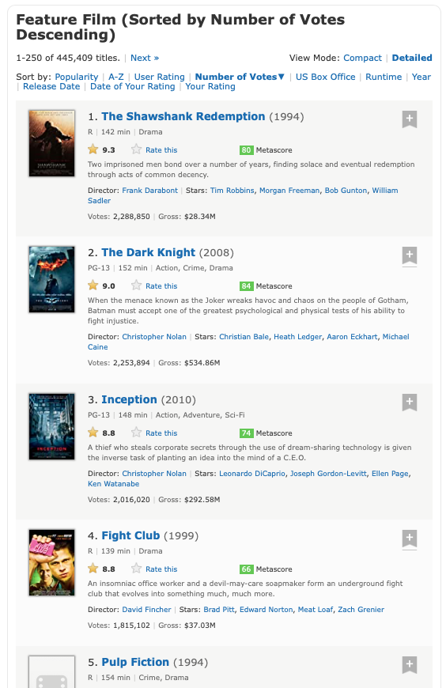

Regularni izrazi#
Običajno moramo podatke, ki jih želimo analizirati, najprej prečistiti. Na primer, svetovni splet je bogat vir podatkov, vendar so ti dostikrat dostopni le v formatu HTML, ki poleg koristne vsebine vsebuje še marsikaj. Recimo, da nas zanimajo podatki o 250 filmih z največ glasovi na strani IMDB. Vidimo, da stran ponuja veliko koristnih podatkov: naslov, leto izida, dolžno, žanre, ocene, igralce, opise, …

Če pa v brskalniku shranimo izvorno kodo in HTML datoteko odpremo, pa je podatke težko najti.
with open('podatki/250-najbolj-znanih-filmov.html') as f:
html = f.read()
print(html[:1000])
<!DOCTYPE html>
<html xmlns:og="http://ogp.me/ns#" xmlns:fb="http://www.facebook.com/2008/fbml">
<head>
<script type='text/javascript'>
var ue_t0 = ue_t0 || +new Date();
</script>
<script type='text/javascript'>
window.ue_ihb = (window.ue_ihb || window.ueinit || 0) + 1;
if (window.ue_ihb === 1) {
var ue_csm = window,
ue_hob = +new Date();
(function(d) {
var e = d.ue = d.ue || {},
f = Date.now || function() {
return +new Date
};
e.d = function(b) {
return f() - (b ? 0 : d.ue_t0)
};
e.stub = function(b, a) {
if (!b[a]) {
var c = [];
b[a] = function() {
c.push([c.slice.call(arguments), e.d(), d.ue_id])
};
b[a].replay = function(b) {
for (var a; a = c.shift();)
Pomagajmo si s pomožno funkcijo, ki poišče začetke in konce vseh neprekrivajočih se pojavitev danega niza v besedilu.
def vse_pojavitve(besedilo: str, iskani_niz: str):
konec_pojavitve = 0
while True:
try:
zacetek_pojavitve = besedilo.index(iskani_niz, konec_pojavitve)
konec_pojavitve = min(zacetek_pojavitve + len(iskani_niz), len(besedilo))
yield zacetek_pojavitve, konec_pojavitve
except ValueError:
break
list(vse_pojavitve('Ena sama je, mama!', 'ma'))
[(6, 8), (13, 15), (15, 17)]
Če želimo, lahko vsako pojavitev prikažemo v njenem kontekstu:
def pokazi_vse_pojavitve(besedilo: str, iskani_niz: str, velikost_konteksta=50):
for zacetek, konec in vse_pojavitve(besedilo, iskani_niz):
zacetek_konteksta = max(zacetek - velikost_konteksta, 0)
konec_konteksta = min(konec + velikost_konteksta, len(besedilo))
print(besedilo[zacetek_konteksta:konec_konteksta])
print((zacetek - zacetek_konteksta) * ' ' + (konec - zacetek) * '^')
pokazi_vse_pojavitve('Ena sama je, mama!', 'ma')
Ena sama je, mama!
^^
Ena sama je, mama!
^^
Ena sama je, mama!
^^
Recimo, da nas zanimajo podatki o Vojni zvezd:
pokazi_vse_pojavitve(html.replace('\n', ''), 'Star Wars')
<img alt="Star Wars: Episode IV - A New Hope" class="loadlate" loadla
^^^^^^^^^
<a href="/title/tt0076759/?ref_=adv_li_tt">Star Wars: Episode IV - A New Hope</a>
^^^^^^^^^
<img alt="Star Wars: Episode V - The Empire Strikes Back" class="load
^^^^^^^^^
<a href="/title/tt0080684/?ref_=adv_li_tt">Star Wars: Episode V - The Empire Strikes Back</a>
^^^^^^^^^
<img alt="Star Wars: Return of the Jedi" class="loadlate" loadlate="h
^^^^^^^^^
<a href="/title/tt0086190/?ref_=adv_li_tt">Star Wars: Return of the Jedi</a>
^^^^^^^^^
<img alt="Star Wars: Episode VII - The Force Awakens" class="loadlate
^^^^^^^^^
<a href="/title/tt2488496/?ref_=adv_li_tt">Star Wars: Episode VII - The Force Awakens</a>
^^^^^^^^^
<img alt="Star Wars: Episode I - The Phantom Menace" class="loadlate"
^^^^^^^^^
<a href="/title/tt0120915/?ref_=adv_li_tt">Star Wars: Episode I - The Phantom Menace</a>
^^^^^^^^^
<img alt="Star Wars: Episode III - Revenge of the Sith" class="loadla
^^^^^^^^^
<a href="/title/tt0121766/?ref_=adv_li_tt">Star Wars: Episode III - Revenge of the Sith</a>
^^^^^^^^^
<img alt="Star Wars: Episode II - Attack of the Clones" class="loadla
^^^^^^^^^
<a href="/title/tt0121765/?ref_=adv_li_tt">Star Wars: Episode II - Attack of the Clones</a>
^^^^^^^^^
<img alt="Star Wars: Episode VIII - The Last Jedi" class="loadlate" l
^^^^^^^^^
<a href="/title/tt2527336/?ref_=adv_li_tt">Star Wars: Episode VIII - The Last Jedi</a>
^^^^^^^^^
"> The Star Wars saga continues as new heroes and galactic legends
^^^^^^^^^
V datoteki najdemo kar nekaj pojavitev, za vsako epizodo po dve: eno iz prikaza naslova in eno iz opisa slike. Vidimo, da so vsi naslovi podobne oblike: na začetku je značka <a href="/title/tt0123456/?ref_=adv_li_tt">, pri čemer se šifra spreminja od filma do filma, na koncu je </a>, med njima pa je naslov filma. Če bi se zelo potrudili, bi lahko spisali program, ki iz takega niza izlušči šifro in naslov.
def izlusci_sifro_in_naslov(niz):
pred_sifro = '<a href="/title/tt'
med_sifro_in_naslovom = '/?ref_=adv_li_tt">'
za_naslovom = '</a>'
zacetek_sifre = niz.index(pred_sifro) + len(pred_sifro)
konec_sifre = niz.index(med_sifro_in_naslovom)
zacetek_naslova = konec_sifre + len(med_sifro_in_naslovom)
konec_naslova = niz.index(za_naslovom)
sifra = int(niz[zacetek_sifre:konec_sifre])
naslov = niz[zacetek_naslova:konec_naslova]
return sifra, naslov
izlusci_sifro_in_naslov('<a href="/title/tt0076759/?ref_=adv_li_tt">Star Wars: Episode IV - A New Hope</a>')
(76759, 'Star Wars: Episode IV - A New Hope')
izlusci_sifro_in_naslov('<a href="/title/tt0086190/?ref_=adv_li_tt">Star Wars: Episode VI - Return of the Jedi</a>')
(86190, 'Star Wars: Episode VI - Return of the Jedi')
Podobno bi lahko naredili še za leto izida, dolžino in ostalo, vendar mora obstajati boljši način. Mi si bomo pogledali dva. Prvi način so regularni izrazi - ti so univerzalno (z manjšimi dialekti) razširjeni zapis vzorcev nizov, ki jih lahko uporabljamo za delo s kakršnim koli besedilom. Regularne izraze podpirajo praktično vsi programski jeziki in naprednejši urejevalniki besedil. Zaradi vseobče uporabnosti se bomo regularnim izrazom bolj posvetili, niso pa vedno najboljše orodje pri roki, saj zaradi splošnosti ne izkoristijo vse strukture, ki je na voljo. Zato si bomo ogledali še drugi način, knjižnico Beautiful Soup, ki je namenjena analizi HTML datotek.
Regularni izrazi v Pythonu#
Za delo z regularnimi izrazi (ali regeksi) v Pythonu uporabljamo knjižnico re, ki je vključen v vsako različico Pythona. V njej je najbolj osnovna funkcija search, ki sprejme vzorec in besedilo, v katerem iščemo, ter vrne prvo pojavitev, predstavljeno z objektom razreda re.Match.
import re
re.search('ma', 'Ena sama je, mama!')
<re.Match object; span=(6, 8), match='ma'>
V objektu imamo dostop do začetka in konca pojavitve in njene vsebine. Uporabimo lahko tudi funkcijo re.finditer, ki vrne iterator po vseh pojavitvah:
list(re.finditer('ma', 'Ena sama je, mama!'))
[<re.Match object; span=(6, 8), match='ma'>,
<re.Match object; span=(13, 15), match='ma'>,
<re.Match object; span=(15, 17), match='ma'>]
S pomočjo te funkcije lahko na veliko bolj enostaven način napišemo funkcijo vse_pojavitve.
def vse_pojavitve(besedilo: str, vzorec: str):
for pojavitev in re.finditer(vzorec, besedilo):
yield pojavitev.start(), pojavitev.end()
pokazi_vse_pojavitve('Ena sama je, mama!', 'ma')
Ena sama je, mama!
^^
Ena sama je, mama!
^^
Ena sama je, mama!
^^
Seveda pa regularni izrazi pokažejo svojo pravo moč, ko začnemo uporabljati še ostale vzorce. Vse lahko najdete v uradni dokumentaciji, mi pa si poglejmo najbolj pogoste.
Vzorci za znake#
Katerikoli znak predstavimo s piko:
pokazi_vse_pojavitve('Ena sama je, mama!', '.a')
Ena sama je, mama!
^^
Ena sama je, mama!
^^
Ena sama je, mama!
^^
Ena sama je, mama!
^^
Ena sama je, mama!
^^
pokazi_vse_pojavitve('Ena sama je, mama!', '.m')
Ena sama je, mama!
^^
Ena sama je, mama!
^^
Ena sama je, mama!
^^
Piko samo predstavimo z vzorcem \.. Pri tem je potrebno upoštevati, da je vzorec sestavljen iz dveh znakov: poševnice in pike, zato je treba v Pythonu za poševnico uporabiti ubežni znak:
pokazi_vse_pojavitve('akad. prof. dr. Jana Obvlada', '\\.')
akad. prof. dr. Jana Obvlada
^
akad. prof. dr. Jana Obvlada
^
akad. prof. dr. Jana Obvlada
^
Ker veliko vzorcev uporablja poševnice, dvojne poševnice pa je nadležno pisati, bomo raje uporabili surove nize, v katerih Python ne uporablja ubežnih znakov in \ pomeni preprosto \. Dobimo tako, da pred narekovaj napišemo r.
pokazi_vse_pojavitve('akad. prof. dr. Jana Obvlada', r'\.')
akad. prof. dr. Jana Obvlada
^
akad. prof. dr. Jana Obvlada
^
akad. prof. dr. Jana Obvlada
^
Običajno surove nize uporabljamo za zapis regularnih izrazov (tudi Visual Studio Code v surovih nizih obarva regularne izraze), vendar r ne pomeni regex temveč raw.
Vse števke predstavimo z vzorcem \d, vse črke z vzorcem \w, vse bele znake (presledke, tabulatorje, znake za novo vrstico) pa z vzorcem \s:
pokazi_vse_pojavitve('Potrebujem 500g moke.', r'\d+')
Potrebujem 500g moke.
^^^
pokazi_vse_pojavitve('Potrebujem 500g moke.', r'\w+')
Potrebujem 500g moke.
^^^^^^^^^^
Potrebujem 500g moke.
^^^^
Potrebujem 500g moke.
^^^^
pokazi_vse_pojavitve('Potrebujem 500g moke.', r'\s+')
Potrebujem 500g moke.
^
Potrebujem 500g moke.
^
Če uporabimo veliko tiskano črko, dobimo komplement. Tako vzorcu \D ustrezajo vsi znaki razen števk, vzorcu \W vsi znaki razen črk, vzorcu \S pa vsi znaki razen belih.
pokazi_vse_pojavitve('Potrebujem 500g moke.', r'\D+')
Potrebujem 500g moke.
^^^^^^^^^^^
Potrebujem 500g moke.
^^^^^^^
pokazi_vse_pojavitve('Potrebujem 500g moke.', r'\W+')
Potrebujem 500g moke.
^
Potrebujem 500g moke.
^
Potrebujem 500g moke.
^
pokazi_vse_pojavitve('Potrebujem 500g moke.', r'\S+')
Potrebujem 500g moke.
^^^^^^^^^^
Potrebujem 500g moke.
^^^^
Potrebujem 500g moke.
^^^^^
Omenimo tudi vzorca \b ter \B (boundary). Oba sta ničelne širine, torej sama ne označujeta nobenega znaka. \b označuje pozicijo med besednim znakom (karkoli ujemajoče z \w) ter nebesednim znakom (karkoli ujemajoče z \W).
pokazi_vse_pojavitve('Je pravo vprašanje kaj ali zakaj?', r'\bkaj\b')
Je pravo vprašanje kaj ali zakaj?
^^^
Vzorec \B pa predstavlja ravno obratno. Uporabimo ga, kadar iskani del ni na začetku ali koncu besede.
pokazi_vse_pojavitve('Svet ni niti bel, niti črnobel.', r'\Bbel\b')
Svet ni niti bel, niti črnobel.
^^^
Če se želimo omejiti na posamezne znake ali posamezen razpon zaporednih znakov, jih naštejemo med oglatimi oklepaji:
pokazi_vse_pojavitve('ata, mama, teta, stric', r'.[aeiou].')
ata, mama, teta, stric
^^^
ata, mama, teta, stric
^^^
ata, mama, teta, stric
^^^
ata, mama, teta, stric
^^^
pokazi_vse_pojavitve('ata, mama, teta, stric', r'.[aeiou][a-z]')
ata, mama, teta, stric
^^^
ata, mama, teta, stric
^^^
ata, mama, teta, stric
^^^
Če kot prvi znak v oglatih oklepajih damo ^, dobimo komplement:
pokazi_vse_pojavitve('ata, mama, teta, stric', r'.[^aeiou].')
ata, mama, teta, stric
^^^
ata, mama, teta, stric
^^^
ata, mama, teta, stric
^^^
ata, mama, teta, stric
^^^
ata, mama, teta, stric
^^^
ata, mama, teta, stric
^^^
ata, mama, teta, stric
^^^
Kvantifikatorji#
Z * označimo poljubno mnogo ponovitev danega vzorca:
pokazi_vse_pojavitve('Oddal sem davčno napoved', r'd*a')
Oddal sem davčno napoved
^^^
Oddal sem davčno napoved
^^
Oddal sem davčno napoved
^
Če želimo, da se vzorec pojavi vsaj enkrat, uporabimo +:
pokazi_vse_pojavitve('Oddal sem davčno napoved', r'd+a')
Oddal sem davčno napoved
^^^
Oddal sem davčno napoved
^^
Kvantifikatorja * in + sta požrešna, kar pomeni, da poskusita zajeti kolikor znakov lahko:
pokazi_vse_pojavitve('Oddal sem davčno napoved', r'd.*a')
Oddal sem davčno napoved
^^^^^^^^^^^^^^^^^^
pokazi_vse_pojavitve('Oddal sem davčno napoved', r'd.+a')
Oddal sem davčno napoved
^^^^^^^^^^^^^^^^^^
Če želimo najti najkrajše možne pojavitve, moramo na koncu dodati še ?:
pokazi_vse_pojavitve('Oddal sem davčno napoved', r'd.*?a')
Oddal sem davčno napoved
^^^
Oddal sem davčno napoved
^^
pokazi_vse_pojavitve('Oddal sem davčno napoved', r'd.+?a')
Oddal sem davčno napoved
^^^
Oddal sem davčno napoved
^^^^^^^^^
Če uporabimo samo ?, to pomeni morebitno pojavitev vzorca:
pokazi_vse_pojavitve('Oddal sem davčno napoved', r'da?')
Oddal sem davčno napoved
^
Oddal sem davčno napoved
^^
Oddal sem davčno napoved
^^
Oddal sem davčno napoved
^
Če želimo dobiti znake *, + in ? uporabimo \*, \+ in \?.
Kvantifikatorji *, + in ? so posebni primeri kvantifikatorja {m,n}, ki predstavlja katerokoli število ponovitev med m in n, pri čemer lahko kakšno izmed meja tudi izpustimo. Tako je kvantifikator * okrajšava za {0,}, kvantifikator + okrajšava za {1,}, kvantifikator ? pa okrajšava za {0,1}.
pokazi_vse_pojavitve('"Brrrr, brrrrrr, brrr, brrrrrrr," je drgetal od mraza.', r'[Bb]r{4,5}')
"Brrrr, brrrrrr, brrr, brrrrrrr," je drgetal od mraza.
^^^^^
"Brrrr, brrrrrr, brrr, brrrrrrr," je drgetal od mraza.
^^^^^^
"Brrrr, brrrrrr, brrr, brrrrrrr," je drgetal od mraza.
^^^^^^
pokazi_vse_pojavitve('"Brrr, brrrrrr, brrr, brrrrrrr," je drgetal od mraza.', r'[Bb]r{4,}')
"Brrr, brrrrrr, brrr, brrrrrrr," je drgetal od mraza.
^^^^^^^
"Brrr, brrrrrr, brrr, brrrrrrr," je drgetal od mraza.
^^^^^^^^
pokazi_vse_pojavitve('"Brrr, brrrrrr, brrr, brrrrrrr," je drgetal od mraza.', r'[Bb]r{,5}')
"Brrr, brrrrrr, brrr, brrrrrrr," je drgetal od mraza.
^^^^
"Brrr, brrrrrr, brrr, brrrrrrr," je drgetal od mraza.
^^^^^^
"Brrr, brrrrrr, brrr, brrrrrrr," je drgetal od mraza.
^^^^
"Brrr, brrrrrr, brrr, brrrrrrr," je drgetal od mraza.
^^^^^^
Skupine#
Vzorce lahko z oklepaji združujemo v skupine:
pokazi_vse_pojavitve('tralala hopsasa', r'([^aeiou][aeiou])+')
tralala hopsasa
^^^^^^
tralala hopsasa
^^
tralala hopsasa
^^^^
V pojavitvi lahko do posameznih skupin dostopamo prek metode group. Celotna pojavitev ima indeks 0, nato pa so oštevilčene glede na uklepaje:
recept = 'Potrebujem 500 g moke in 250 ml vode.'
vzorec = r'(\d+) (\w+)'
for pojavitev in re.finditer(vzorec, recept):
print(f'enota: {pojavitev.group(2)}, vrednost: {pojavitev.group(1)}')
enota: g, vrednost: 500
enota: ml, vrednost: 250
Dostikrat je koristno, da skupine poimenujemo, kar storimo tako, da skupino pišemo kot (?P<ime_skupine>...). Do vseh skupin potem dostopamo prek metode groupdict:
vzorec = r'(?P<kolicina>\d+) (?P<enota>\w+)'
[pojavitev.groupdict() for pojavitev in re.finditer(vzorec, recept)]
[{'kolicina': '500', 'enota': 'g'}, {'kolicina': '250', 'enota': 'ml'}]
Zgornjo funkcijo bi tako lepše napisali kot:
def izlusci_sifro_in_naslov(niz):
vzorec = r'<a href="/title/tt(?P<sifra>\d+)/\?ref_=adv_li_tt">(?P<naslov>.*?)</a>'
pojavitev = re.search(vzorec, niz)
sifra = int(pojavitev.group('sifra'))
naslov = pojavitev.group('naslov')
return sifra, naslov
izlusci_sifro_in_naslov('<a href="/title/tt0076759/?ref_=adv_li_tt">Star Wars: Episode IV - A New Hope</a>')
(76759, 'Star Wars: Episode IV - A New Hope')
izlusci_sifro_in_naslov('<a href="/title/tt0086190/?ref_=adv_li_tt">Star Wars: Episode VI - Return of the Jedi</a>')
(86190, 'Star Wars: Episode VI - Return of the Jedi')
Metode za delo z regularnimi izrazi#
V knjižnici re je na voljo več funkcij za delo z regularnimi izrazi:
search, ki vrne prvo pojavitev danega vzorca v nizu oziromaNone, če je ni:
re.search(r'\d', '3, 4, zdaj!')
<re.Match object; span=(0, 1), match='3'>
re.search(r'\d', 'tri, štiri, zdaj!')
match, ki vrne pojavitev, če ta ustreza začetku niza oziromaNone, če ne:
re.match(r'\d+', '500 g moke')
<re.Match object; span=(0, 3), match='500'>
re.match(r'\d+', 'Potrebujem 500 g moke.')
fullmatch, ki vrne pojavitev, če ta ustreza celotnemu nizu oziromaNone, če ne:
re.fullmatch(r'\w+', 'Proseminar')
<re.Match object; span=(0, 10), match='Proseminar'>
re.fullmatch(r'\w+', 'Uvod v programiranje')
finditer, ki vrne iterator čez vse pojavitve vzorca v nizu:
list(re.finditer(r'\d', '3, 4, zdaj!'))
[<re.Match object; span=(0, 1), match='3'>,
<re.Match object; span=(3, 4), match='4'>]
findall, ki vrne seznam vsebin vseh pojavitev vzorca v nizu:
re.findall(r'\d', '3, 4, zdaj!')
['3', '4']
split, ki dani niz razdeli po pojavitvah:
re.split(r'[aeiou]', 'otorinolaringolog')
['', 't', 'r', 'n', 'l', 'r', 'ng', 'l', 'g']
sub, ki v danem nizu pojavitve zamenja z drugimi nizi, v katerih lahko do posameznih skupin dostopamo prek\1,\2, …
def daj_en_presledek_za_vsako_stevilko(niz):
stevilka_in_morebitni_presledki = r'(\d+)\s*'
return re.sub(stevilka_in_morebitni_presledki, r'\1 ', niz)
daj_en_presledek_za_vsako_stevilko('500g moke in 250 ml vode')
'500 g moke in 250 ml vode'
Vse zgoraj omenjene funkcije poleg običajnih argumentov sprejmejo še dodatne parametre, ki jih imenujemo zastavice in malenkostno spreminjajo iskanje. Na primer, z re.IGNORECASE pri iskanju ne razlikujemo med malimi in velikimi črkami:
re.findall(r'a', 'Abraham')
['a', 'a']
re.findall(r'a', 'Abraham', flags=re.IGNORECASE)
['A', 'a', 'a']
Druga pogosto uporabljana zastavica je re.DOTALL. Vzorec . običajno pomeni vse znake razen znaka za novo vrstico. Če uporabimo re.DOTALL, pa vključuje tudi tega:
re.findall(r'X.*?Y', 'XyzzY X Y X\nY')
['XyzzY', 'X Y']
re.findall(r'X.*?Y', 'XyzzY X Y X\nY', flags=re.DOTALL)
['XyzzY', 'X Y', 'X\nY']
Če želimo uporabiti več zastavic, jih v eno sestavimo z |:
re.findall(r'X.*?Y', 'XyzzY x y X\nY', flags=(re.DOTALL|re.IGNORECASE))
['Xy', 'x y', 'X\nY']
Vse zgoraj omenjene funkcije sprejmejo niz z vzorcem, ki ga iščemo. Še bolj Pythonovsko in tudi bolj učinkovito, če vzorec uporabljamo večkrat, pa je, da vzorec s funkcijo compile pretvorimo v objekt re.Pattern. Na takem objektu lahko potem kličemo metode z istimi imeni kot zgoraj omenjene funkcije.
izraz = re.compile(r'X.*?Y', flags=(re.DOTALL|re.IGNORECASE))
izraz.findall('XyzzY x y X\nY')
['Xy', 'x y', 'X\nY']
Organizacija večjih regularnih izrazov#
Če želimo zajeti veliko podatkov, potrebujemo vedno bolj zapletene regularne izraze, kar postane hitro nepregledno. Najprej si bomo pomagali s tem, da bomo regularne izraze pisali čez več vrstic. Python nam omogoča, da dobesedne nize (torej tiste v narekovajih) stikamo tako, da jih pišemo enega za drugim, na primer:
'Tole ' 'dela' ',' " ker imamo" f""" {2 * 3}""" ' nizov v narekovajih.'
'Tole dela, ker imamo 6 nizov v narekovajih.'
izvor_tezave = 'spremenljivka'
'Tole pa ne,' "ker je vmes tudi ' izvor_tezave '.'
Cell In[63], line 2
'Tole pa ne,' "ker je vmes tudi ' izvor_tezave '.'
^
SyntaxError: unterminated string literal (detected at line 2)
Poleg tega lahko v Pythonu izraze v oklepajih razbijemo čez več vrstic. Oboje skupaj nam omogoča, da vzorec filma napišemo takole:
vzorec_filma = re.compile(
# šifro vzamemo iz povezave
r'<a href="/title/tt(?P<id>\d+)/.*?".*?'
r'img alt="(?P<naslov>.+?)".*?'
# pri letu ignoriramo morebitne rimske številke
r'lister-item-year text-muted unbold">.*?\((?P<leto>\d{4})\)</span>.*?'
r'runtime">(?P<dolzina>\d+?) min</.*?'
# žanre zajamemo v enem kosu, ki ga bomo kasneje razbili
r'<span class="genre">(?P<zanri>.*?)</span>.*?'
r'<strong>(?P<ocena>.+?)</strong>.*?'
r'<p class="text-muted">(?P<opis>.+?)</p.*?'
r'Directors?:(?P<reziserji>.+?)(<span class="ghost">|</p>).*?'
r'Votes:.*?data-value="(?P<glasovi>\d+)"',
flags=re.DOTALL
)
Poleg tega bomo napisali več manjših vzorcev, ki bodo postopoma obdelovali datoteko. Pri regularnih izrazih namreč že majhna sprememba povzroči, da iz sto zadetkov pademo na nobenega (ali pa enega, ki zajame celotno besedilo od začetka prvega do konca zadnjega želenega zadetka). Zato zgoraj napisanega vzorca filma ne bomo iskali v celotni datoteki, temveč bomo datoteko najprej razbili na osnovne bloke, v katerih so vsi podatki posameznega filma. Če se malo potrudimo, vidimo, da je ustrezen sledeči vzorec:
vzorec_bloka = re.compile(
r'<div class="lister-item mode-advanced">.*?'
r'</p>\s*</div>\s*</div>',
flags=re.DOTALL
)
Nato bomo v vsakem od blokov poiskali (edini) vzorec podatkov filma.
for blok in vzorec_bloka.finditer(html):
film = vzorec_filma.search(blok.group(0)).groupdict()
if 'Star Wars' in film['naslov']:
print(film)
{'id': '0076759', 'naslov': 'Star Wars: Episode IV - A New Hope', 'leto': '1977', 'dolzina': '121', 'zanri': '\n Action, Adventure, Fantasy ', 'ocena': '8.6', 'opis': "\n Luke Skywalker joins forces with a Jedi Knight, a cocky pilot, a Wookiee and two droids to save the galaxy from the Empire's world-destroying battle station, while also attempting to rescue Princess Leia from the mysterious Darth Vader.", 'reziserji': '\n <a href="/name/nm0000184/?ref_=adv_li_dr_0">George Lucas</a>\n ', 'glasovi': '1278688'}
{'id': '0080684', 'naslov': 'Star Wars: Episode V - The Empire Strikes Back', 'leto': '1980', 'dolzina': '124', 'zanri': '\n Action, Adventure, Fantasy ', 'ocena': '8.7', 'opis': '\n After the Rebels are brutally overpowered by the Empire on the ice planet Hoth, Luke Skywalker begins Jedi training with Yoda, while his friends are pursued across the galaxy by Darth Vader and bounty hunter Boba Fett.', 'reziserji': '\n <a href="/name/nm0449984/?ref_=adv_li_dr_0">Irvin Kershner</a>\n ', 'glasovi': '1206876'}
{'id': '0086190', 'naslov': 'Star Wars: Return of the Jedi', 'leto': '1983', 'dolzina': '131', 'zanri': '\n Action, Adventure, Fantasy ', 'ocena': '8.3', 'opis': "\n After a daring mission to rescue Han Solo from Jabba the Hutt, the Rebels dispatch to Endor to destroy the second Death Star. Meanwhile, Luke struggles to help Darth Vader back from the dark side without falling into the Emperor's trap.", 'reziserji': '\n <a href="/name/nm0549658/?ref_=adv_li_dr_0">Richard Marquand</a>\n ', 'glasovi': '987529'}
{'id': '2488496', 'naslov': 'Star Wars: Episode VII - The Force Awakens', 'leto': '2015', 'dolzina': '138', 'zanri': '\n Action, Adventure, Sci-Fi ', 'ocena': '7.8', 'opis': '\n As a new threat to the galaxy rises, Rey, a desert scavenger, and Finn, an ex-stormtrooper, must join Han Solo and Chewbacca to search for the one hope of restoring peace.', 'reziserji': '\n <a href="/name/nm0009190/?ref_=adv_li_dr_0">J.J. Abrams</a>\n ', 'glasovi': '885817'}
{'id': '0120915', 'naslov': 'Star Wars: Episode I - The Phantom Menace', 'leto': '1999', 'dolzina': '136', 'zanri': '\n Action, Adventure, Fantasy ', 'ocena': '6.5', 'opis': '\n Two Jedi escape a hostile blockade to find allies and come across a young boy who may bring balance to the Force, but the long dormant Sith resurface to claim their original glory.', 'reziserji': '\n <a href="/name/nm0000184/?ref_=adv_li_dr_0">George Lucas</a>\n ', 'glasovi': '756875'}
{'id': '0121766', 'naslov': 'Star Wars: Episode III - Revenge of the Sith', 'leto': '2005', 'dolzina': '140', 'zanri': '\n Action, Adventure, Fantasy ', 'ocena': '7.5', 'opis': '\n Three years into the Clone Wars, the Jedi rescue Palpatine from Count Dooku. As Obi-Wan pursues a new threat, Anakin acts as a double agent between the Jedi Council and Palpatine and is lured into a sinister plan to rule the galaxy.', 'reziserji': '\n <a href="/name/nm0000184/?ref_=adv_li_dr_0">George Lucas</a>\n ', 'glasovi': '738687'}
{'id': '0121765', 'naslov': 'Star Wars: Episode II - Attack of the Clones', 'leto': '2002', 'dolzina': '142', 'zanri': '\n Action, Adventure, Fantasy ', 'ocena': '6.5', 'opis': '\n Ten years after initially meeting, Anakin Skywalker shares a forbidden romance with Padmé Amidala, while Obi-Wan Kenobi investigates an assassination attempt on the senator and discovers a secret clone army crafted for the Jedi.', 'reziserji': '\n <a href="/name/nm0000184/?ref_=adv_li_dr_0">George Lucas</a>\n ', 'glasovi': '666547'}
{'id': '2527336', 'naslov': 'Star Wars: Episode VIII - The Last Jedi', 'leto': '2017', 'dolzina': '152', 'zanri': '\n Action, Adventure, Fantasy ', 'ocena': '6.9', 'opis': '\n The Star Wars saga continues as new heroes and galactic legends go on an epic adventure, unlocking mysteries of the Force and shocking revelations of the past.', 'reziserji': '\n <a href="/name/nm0426059/?ref_=adv_li_dr_0">Rian Johnson</a>\n ', 'glasovi': '589564'}
Nekateri izmed manj znanih filmov nimajo vseh podatkov o zaslužku ali oznakah ustreznosti. To bi lahko rešili tako, da bi del vzorca, ki zajema te podatke zapisali v obliki (...)?, vendar vsaka taka možnost povečuje zapletenost regularnega izraza in čas iskanja. Namesto tega lahko neobvezne podatke izločimo z dodatno analizo bloka. Na primer, zaslužek najdemo z vzorcem
vzorec_zasluzka = re.compile(
r'Gross:.*?data-value="(?P<zasluzek>(\d|,)+)"',
flags=re.DOTALL
)
Nato pa ta vzorec poskusimo najti v vsakem bloku. Če je, ga pretvorimo v število, sicer pa ga nastavimo na None:
zasluzek = vzorec_zasluzka.search(blok.group(0))
if zasluzek:
film['zasluzek'] = int(zasluzek['zasluzek'].replace(',', ''))
else:
film['zasluzek'] = None
Podobno moramo počistiti tudi večino ostalih podatkov. Na primer, žanri se skrivajo v znački <span class="genre">...</span>, vendar znotraj značke ni nobene strukture, samo niz, ločen z vejicami. Tako bomo žanre počistili z:
film['zanri'] = film['zanri'].strip().split(', ')
Pri igralcih in režiserjih je zadeva še bolj zapletena, ker ima vsak izmed njih še svojo šifro osebe, pa tudi zanima nas, na katerem mestu je kdo napisan (glavne vloge so na začetku, stranske pa kasneje). Tudi tu najprej zajamemo del vsebine, kjer so podatki o igralcih, nato pa znotraj tega dela z manjšim vzorcem izluščimo podatke.
Knjižnica Beautiful Soup#
Kot smo omenili, regularni izrazi nujno najboljše orodje za analizo spletnih strani, saj delujejo na nivoju znakov, HTML pa ima bogatejšo strukturo gnezdenih značk z atributi. No, vsaj v teoriji. V praksi pa dostikrat ni tako, saj so ljudje pri pisanju HTMLja površni, saj značk ne zaključujejo ali jih neustrezno gnezdijo, na primer <strong>Krepko in <em>ležeče</strong></em>. Tako v šali rečemo, da HTML lahko predstavimo z juho, v kateri plavajo značke. In po tej juhi se imenuje tudi knjižnica za analizo HTMLja Beautiful Soup. Knjižnico moramo tako kot requests najprej namestiti, uvozimo z ukazom:
import bs4
HTML pa pretvorimo v ustrezen objekt z:
juha = bs4.BeautifulSoup(html, 'html.parser')
Na objektu imamo na voljo več metod. Naštejmo štiri, ki jih bomo potrebovali v našem primeru:
find_all, ki najde vse potomce, ki zadoščajo danim lastnostim,get, ki vrne vrednost danega atributa,string, ki vrne vsebino značke infind_next_sibling, ki vrne naslednjega sorojenca.
S pomočjo njih bi lahko osnovne podatke o filmih prebrali tako, da najprej najdemo vse značke <a>, katerih atribut href se konča s ?ref_=adv_li_tt. Iz povezave lahko izluščimo šifro, iz značke, ki ji sledi, pa še naslov in leto izida. Za vse tri moramo uporabiti regularne izraze, saj na neki točki vseeno zmanjka HTML strukture in moramo iskati po nizih.
for povezava in juha.find_all('a'):
url = povezava.get('href')
if url and url.endswith('?ref_=adv_li_tt'):
naslov = povezava.string
id = int(re.search('\d{7}', url).group(0))
znacka_z_letom = povezava.find_next_sibling()
niz_z_letom = znacka_z_letom.string
vzorec_leta = r'(\([IVXLCDM]+\) )?\((?P<leto>.*?)\)'
leto = int(re.fullmatch(vzorec_leta, niz_z_letom).group('leto'))
print({'id': id, 'naslov': naslov, 'leto': leto})
{'id': 111161, 'naslov': 'The Shawshank Redemption', 'leto': 1994}
{'id': 468569, 'naslov': 'The Dark Knight', 'leto': 2008}
{'id': 1375666, 'naslov': 'Inception', 'leto': 2010}
{'id': 137523, 'naslov': 'Fight Club', 'leto': 1999}
{'id': 110912, 'naslov': 'Pulp Fiction', 'leto': 1994}
{'id': 109830, 'naslov': 'Forrest Gump', 'leto': 1994}
{'id': 133093, 'naslov': 'The Matrix', 'leto': 1999}
{'id': 120737, 'naslov': 'The Lord of the Rings: The Fellowship of the Ring', 'leto': 2001}
{'id': 167260, 'naslov': 'The Lord of the Rings: The Return of the King', 'leto': 2003}
{'id': 68646, 'naslov': 'The Godfather', 'leto': 1972}
{'id': 816692, 'naslov': 'Interstellar', 'leto': 2014}
{'id': 1345836, 'naslov': 'The Dark Knight Rises', 'leto': 2012}
{'id': 167261, 'naslov': 'The Lord of the Rings: The Two Towers', 'leto': 2002}
{'id': 114369, 'naslov': 'Seven', 'leto': 1995}
{'id': 1853728, 'naslov': 'Django Unchained', 'leto': 2012}
{'id': 172495, 'naslov': 'Gladiator', 'leto': 2000}
{'id': 372784, 'naslov': 'Batman Begins', 'leto': 2005}
{'id': 361748, 'naslov': 'Inglourious Basterds', 'leto': 2009}
{'id': 102926, 'naslov': 'The Silence of the Lambs', 'leto': 1991}
{'id': 848228, 'naslov': 'Avengers Assemble', 'leto': 2012}
{'id': 120815, 'naslov': 'Saving Private Ryan', 'leto': 1998}
{'id': 76759, 'naslov': 'Star Wars: Episode IV - A New Hope', 'leto': 1977}
{'id': 108052, 'naslov': "Schindler's List", 'leto': 1993}
{'id': 993846, 'naslov': 'The Wolf of Wall Street', 'leto': 2013}
{'id': 482571, 'naslov': 'The Prestige', 'leto': 2006}
{'id': 407887, 'naslov': 'The Departed', 'leto': 2006}
{'id': 80684, 'naslov': 'Star Wars: Episode V - The Empire Strikes Back', 'leto': 1980}
{'id': 120689, 'naslov': 'The Green Mile', 'leto': 1999}
{'id': 1130884, 'naslov': 'Shutter Island', 'leto': 2010}
{'id': 71562, 'naslov': 'The Godfather: Part II', 'leto': 1974}
{'id': 209144, 'naslov': 'Memento', 'leto': 2000}
{'id': 499549, 'naslov': 'Avatar', 'leto': 2009}
{'id': 88763, 'naslov': 'Back to the Future', 'leto': 1985}
{'id': 169547, 'naslov': 'American Beauty', 'leto': 1999}
{'id': 2015381, 'naslov': 'Guardians of the Galaxy', 'leto': 2014}
{'id': 120338, 'naslov': 'Titanic', 'leto': 1997}
{'id': 110413, 'naslov': 'Leon', 'leto': 1994}
{'id': 99685, 'naslov': 'Goodfellas', 'leto': 1990}
{'id': 7286456, 'naslov': 'Joker', 'leto': 2019}
{'id': 120586, 'naslov': 'American History X', 'leto': 1998}
{'id': 434409, 'naslov': 'V for Vendetta', 'leto': 2005}
{'id': 266697, 'naslov': 'Kill Bill: Vol. 1', 'leto': 2003}
{'id': 325980, 'naslov': 'Pirates of the Caribbean: The Curse of the Black Pearl', 'leto': 2003}
{'id': 910970, 'naslov': 'WALL·E', 'leto': 2008}
{'id': 103064, 'naslov': 'Terminator 2: Judgment Day', 'leto': 1991}
{'id': 114814, 'naslov': 'The Usual Suspects', 'leto': 1995}
{'id': 120382, 'naslov': 'The Truman Show', 'leto': 1998}
{'id': 112573, 'naslov': 'Braveheart', 'leto': 1995}
{'id': 86190, 'naslov': 'Star Wars: Return of the Jedi', 'leto': 1983}
{'id': 110357, 'naslov': 'The Lion King', 'leto': 1994}
{'id': 371746, 'naslov': 'Iron Man', 'leto': 2008}
{'id': 266543, 'naslov': 'Finding Nemo', 'leto': 2003}
{'id': 1049413, 'naslov': 'Up', 'leto': 2009}
{'id': 105236, 'naslov': 'Reservoir Dogs', 'leto': 1992}
{'id': 73486, 'naslov': "One Flew Over the Cuckoo's Nest", 'leto': 1975}
{'id': 1431045, 'naslov': 'Deadpool', 'leto': 2016}
{'id': 338013, 'naslov': 'Eternal Sunshine of the Spotless Mind', 'leto': 2004}
{'id': 81505, 'naslov': 'The Shining', 'leto': 1980}
{'id': 4154796, 'naslov': 'Avengers: Endgame', 'leto': 2019}
{'id': 167404, 'naslov': 'The Sixth Sense', 'leto': 1999}
{'id': 1392190, 'naslov': 'Mad Max: Fury Road', 'leto': 2015}
{'id': 114709, 'naslov': 'Toy Story', 'leto': 1995}
{'id': 4154756, 'naslov': 'Avengers: Infinity War', 'leto': 2018}
{'id': 82971, 'naslov': 'Raiders of the Lost Ark', 'leto': 1981}
{'id': 2267998, 'naslov': 'Gone Girl', 'leto': 2014}
{'id': 107290, 'naslov': 'Jurassic Park', 'leto': 1993}
{'id': 477348, 'naslov': 'No Country for Old Men', 'leto': 2007}
{'id': 119217, 'naslov': 'Good Will Hunting', 'leto': 1997}
{'id': 264464, 'naslov': 'Catch Me If You Can', 'leto': 2002}
{'id': 2488496, 'naslov': 'Star Wars: Episode VII - The Force Awakens', 'leto': 2015}
{'id': 268978, 'naslov': 'A Beautiful Mind', 'leto': 2001}
{'id': 1392170, 'naslov': 'The Hunger Games', 'leto': 2012}
{'id': 198781, 'naslov': 'Monsters, Inc.', 'leto': 2001}
{'id': 78748, 'naslov': 'Alien', 'leto': 1979}
{'id': 95016, 'naslov': 'Die Hard', 'leto': 1988}
{'id': 88247, 'naslov': 'The Terminator', 'leto': 1984}
{'id': 1010048, 'naslov': 'Slumdog Millionaire', 'leto': 2008}
{'id': 208092, 'naslov': 'Snatch', 'leto': 2000}
{'id': 1201607, 'naslov': 'Harry Potter and the Deathly Hallows: Part 2', 'leto': 2011}
{'id': 1675434, 'naslov': 'Untouchable', 'leto': 2011}
{'id': 180093, 'naslov': 'Requiem for a Dream', 'leto': 2000}
{'id': 3659388, 'naslov': 'The Martian', 'leto': 2015}
{'id': 2395427, 'naslov': 'Avengers: Age of Ultron', 'leto': 2015}
{'id': 1300854, 'naslov': 'Iron Man 3', 'leto': 2013}
{'id': 1454468, 'naslov': 'Gravity', 'leto': 2013}
{'id': 435761, 'naslov': 'Toy Story 3', 'leto': 2010}
{'id': 66921, 'naslov': 'A Clockwork Orange', 'leto': 1971}
{'id': 800369, 'naslov': 'Thor', 'leto': 2011}
{'id': 458339, 'naslov': 'Captain America: The First Avenger', 'leto': 2011}
{'id': 903624, 'naslov': 'The Hobbit: An Unexpected Journey', 'leto': 2012}
{'id': 86250, 'naslov': 'Scarface', 'leto': 1983}
{'id': 1843866, 'naslov': 'Captain America: The Winter Soldier', 'leto': 2014}
{'id': 253474, 'naslov': 'The Pianist', 'leto': 2002}
{'id': 118715, 'naslov': 'The Big Lebowski', 'leto': 1998}
{'id': 2582802, 'naslov': 'Whiplash', 'leto': 2014}
{'id': 246578, 'naslov': 'Donnie Darko', 'leto': 2001}
{'id': 75314, 'naslov': 'Taxi Driver', 'leto': 1976}
{'id': 1228705, 'naslov': 'Iron Man 2', 'leto': 2010}
{'id': 416449, 'naslov': '300', 'leto': 2006}
{'id': 120915, 'naslov': 'Star Wars: Episode I - The Phantom Menace', 'leto': 1999}
{'id': 401792, 'naslov': 'Sin City', 'leto': 2005}
{'id': 2278388, 'naslov': 'The Grand Budapest Hotel', 'leto': 2014}
{'id': 1119646, 'naslov': 'The Hangover', 'leto': 2009}
{'id': 1663202, 'naslov': 'The Revenant', 'leto': 2015}
{'id': 1205489, 'naslov': 'Gran Torino', 'leto': 2008}
{'id': 121766, 'naslov': 'Star Wars: Episode III - Revenge of the Sith', 'leto': 2005}
{'id': 50083, 'naslov': '12 Angry Men', 'leto': 1957}
{'id': 770828, 'naslov': 'Man of Steel', 'leto': 2013}
{'id': 145487, 'naslov': 'Spider-Man', 'leto': 2002}
{'id': 211915, 'naslov': 'Amélie', 'leto': 2001}
{'id': 947798, 'naslov': 'Black Swan', 'leto': 2010}
{'id': 83658, 'naslov': 'Blade Runner', 'leto': 1982}
{'id': 317248, 'naslov': 'City of God', 'leto': 2002}
{'id': 60196, 'naslov': 'The Good, the Bad and the Ugly', 'leto': 1966}
{'id': 2084970, 'naslov': 'The Imitation Game', 'leto': 2014}
{'id': 97576, 'naslov': 'Indiana Jones and the Last Crusade', 'leto': 1989}
{'id': 378194, 'naslov': 'Kill Bill: Vol. 2', 'leto': 2004}
{'id': 480249, 'naslov': 'I Am Legend', 'leto': 2007}
{'id': 3498820, 'naslov': 'Captain America: Civil War', 'leto': 2016}
{'id': 93058, 'naslov': 'Full Metal Jacket', 'leto': 1987}
{'id': 241527, 'naslov': "Harry Potter and the Philosopher's Stone", 'leto': 2001}
{'id': 245429, 'naslov': 'Spirited Away', 'leto': 2001}
{'id': 892769, 'naslov': 'How to Train Your Dragon', 'leto': 2010}
{'id': 3315342, 'naslov': 'Logan', 'leto': 2017}
{'id': 317705, 'naslov': 'The Incredibles', 'leto': 2004}
{'id': 1045658, 'naslov': 'Silver Linings Playbook', 'leto': 2012}
{'id': 1877832, 'naslov': 'X-Men: Days of Future Past', 'leto': 2014}
{'id': 90605, 'naslov': 'Aliens', 'leto': 1986}
{'id': 1825683, 'naslov': 'Black Panther', 'leto': 2018}
{'id': 383574, 'naslov': "Pirates of the Caribbean: Dead Man's Chest", 'leto': 2006}
{'id': 382932, 'naslov': 'Ratatouille', 'leto': 2007}
{'id': 121765, 'naslov': 'Star Wars: Episode II - Attack of the Clones', 'leto': 2002}
{'id': 2024544, 'naslov': '12 Years a Slave', 'leto': 2013}
{'id': 2975590, 'naslov': 'Batman v Superman: Dawn of Justice', 'leto': 2016}
{'id': 6751668, 'naslov': 'Parasite', 'leto': 2019}
{'id': 1270798, 'naslov': 'X-Men: First Class', 'leto': 2011}
{'id': 405159, 'naslov': 'Million Dollar Baby', 'leto': 2004}
{'id': 1504320, 'naslov': "The King's Speech", 'leto': 2010}
{'id': 117951, 'naslov': 'Trainspotting', 'leto': 1996}
{'id': 1136608, 'naslov': 'District 9', 'leto': 2009}
{'id': 1285016, 'naslov': 'The Social Network', 'leto': 2010}
{'id': 2096673, 'naslov': 'Inside Out', 'leto': 2015}
{'id': 118799, 'naslov': 'Life Is Beautiful', 'leto': 1997}
{'id': 1386697, 'naslov': 'Suicide Squad', 'leto': 2016}
{'id': 1074638, 'naslov': 'Skyfall', 'leto': 2012}
{'id': 3501632, 'naslov': 'Thor: Ragnarok', 'leto': 2017}
{'id': 1211837, 'naslov': 'Doctor Strange', 'leto': 2016}
{'id': 116282, 'naslov': 'Fargo', 'leto': 1996}
{'id': 7131622, 'naslov': 'Once Upon a Time... In Hollywood', 'leto': 2019}
{'id': 457430, 'naslov': "Pan's Labyrinth", 'leto': 2006}
{'id': 126029, 'naslov': 'Shrek', 'leto': 2001}
{'id': 1392214, 'naslov': 'Prisoners', 'leto': 2013}
{'id': 2543164, 'naslov': 'Arrival', 'leto': 2016}
{'id': 1951264, 'naslov': 'The Hunger Games: Catching Fire', 'leto': 2013}
{'id': 1631867, 'naslov': 'Edge of Tomorrow', 'leto': 2014}
{'id': 54215, 'naslov': 'Psycho', 'leto': 1960}
{'id': 62622, 'naslov': '2001: A Space Odyssey', 'leto': 1968}
{'id': 78788, 'naslov': 'Apocalypse Now', 'leto': 1979}
{'id': 1981115, 'naslov': 'Thor: The Dark World', 'leto': 2013}
{'id': 816711, 'naslov': 'World War Z', 'leto': 2013}
{'id': 1170358, 'naslov': 'The Hobbit: The Desolation of Smaug', 'leto': 2013}
{'id': 1670345, 'naslov': 'Now You See Me', 'leto': 2013}
{'id': 2802144, 'naslov': 'Kingsman: The Secret Service', 'leto': 2014}
{'id': 440963, 'naslov': 'The Bourne Ultimatum', 'leto': 2007}
{'id': 449088, 'naslov': "Pirates of the Caribbean: At World's End", 'leto': 2007}
{'id': 421715, 'naslov': 'The Curious Case of Benjamin Button', 'leto': 2008}
{'id': 418279, 'naslov': 'Transformers', 'leto': 2007}
{'id': 3896198, 'naslov': 'Guardians of the Galaxy: Vol. 2', 'leto': 2017}
{'id': 451279, 'naslov': 'Wonder Woman', 'leto': 2017}
{'id': 478970, 'naslov': 'Ant-Man', 'leto': 2015}
{'id': 113277, 'naslov': 'Heat', 'leto': 1995}
{'id': 381061, 'naslov': 'Casino Royale', 'leto': 2006}
{'id': 988045, 'naslov': 'Sherlock Holmes', 'leto': 2009}
{'id': 369610, 'naslov': 'Jurassic World', 'leto': 2015}
{'id': 2562232, 'naslov': 'Birdman or (The Unexpected Virtue of Ignorance)', 'leto': 2014}
{'id': 454876, 'naslov': 'Life of Pi', 'leto': 2012}
{'id': 5013056, 'naslov': 'Dunkirk', 'leto': 2017}
{'id': 114746, 'naslov': 'Twelve Monkeys', 'leto': 1995}
{'id': 107048, 'naslov': 'Groundhog Day', 'leto': 1993}
{'id': 780504, 'naslov': 'Drive', 'leto': 2011}
{'id': 758758, 'naslov': 'Into the Wild', 'leto': 2007}
{'id': 2294629, 'naslov': 'Frozen', 'leto': 2013}
{'id': 1024648, 'naslov': 'Argo', 'leto': 2012}
{'id': 796366, 'naslov': 'Star Trek', 'leto': 2009}
{'id': 2527336, 'naslov': 'Star Wars: Episode VIII - The Last Jedi', 'leto': 2017}
{'id': 120903, 'naslov': 'X-Men', 'leto': 2000}
{'id': 1637725, 'naslov': 'Ted', 'leto': 2012}
{'id': 1446714, 'naslov': 'Prometheus', 'leto': 2012}
{'id': 295297, 'naslov': 'Harry Potter and the Chamber of Secrets', 'leto': 2002}
{'id': 948470, 'naslov': 'The Amazing Spider-Man', 'leto': 2012}
{'id': 304141, 'naslov': 'Harry Potter and the Prisoner of Azkaban', 'leto': 2004}
{'id': 3748528, 'naslov': 'Rogue One', 'leto': 2016}
{'id': 936501, 'naslov': 'Taken', 'leto': 2008}
{'id': 2911666, 'naslov': 'John Wick', 'leto': 2014}
{'id': 316654, 'naslov': 'Spider-Man 2', 'leto': 2004}
{'id': 330373, 'naslov': 'Harry Potter and the Goblet of Fire', 'leto': 2005}
{'id': 1798709, 'naslov': 'Her', 'leto': 2013}
{'id': 73195, 'naslov': 'Jaws', 'leto': 1975}
{'id': 2250912, 'naslov': 'Spider-Man: Homecoming', 'leto': 2017}
{'id': 120735, 'naslov': 'Lock, Stock and Two Smoking Barrels', 'leto': 1998}
{'id': 162222, 'naslov': 'Cast Away', 'leto': 2000}
{'id': 119488, 'naslov': 'L.A. Confidential', 'leto': 1997}
{'id': 3460252, 'naslov': 'The Hateful Eight', 'leto': 2015}
{'id': 1276104, 'naslov': 'Looper', 'leto': 2012}
{'id': 116629, 'naslov': 'Independence Day', 'leto': 1996}
{'id': 120363, 'naslov': 'Toy Story 2', 'leto': 1999}
{'id': 469494, 'naslov': 'There Will Be Blood', 'leto': 2007}
{'id': 1219289, 'naslov': 'Limitless', 'leto': 2011}
{'id': 829482, 'naslov': 'Superbad', 'leto': 2007}
{'id': 34583, 'naslov': 'Casablanca', 'leto': 1942}
{'id': 234215, 'naslov': 'The Matrix Reloaded', 'leto': 2003}
{'id': 1156398, 'naslov': 'Zombieland', 'leto': 2009}
{'id': 364569, 'naslov': 'Oldboy', 'leto': 2003}
{'id': 332280, 'naslov': 'The Notebook', 'leto': 2004}
{'id': 1250777, 'naslov': 'Kick-Ass', 'leto': 2010}
{'id': 75148, 'naslov': 'Rocky', 'leto': 1976}
{'id': 240772, 'naslov': "Ocean's Eleven", 'leto': 2001}
{'id': 3783958, 'naslov': 'La La Land', 'leto': 2016}
{'id': 119654, 'naslov': 'Men in Black', 'leto': 1997}
{'id': 373889, 'naslov': 'Harry Potter and the Order of the Phoenix', 'leto': 2007}
{'id': 8946378, 'naslov': 'Knives Out', 'leto': 2019}
{'id': 5052448, 'naslov': 'Get Out', 'leto': 2017}
{'id': 365748, 'naslov': 'Shaun of the Dead', 'leto': 2004}
{'id': 290334, 'naslov': 'X-Men 2', 'leto': 2003}
{'id': 1232829, 'naslov': '21 Jump Street', 'leto': 2012}
{'id': 181689, 'naslov': 'Minority Report', 'leto': 2002}
{'id': 144084, 'naslov': 'American Psycho', 'leto': 2000}
{'id': 409459, 'naslov': 'Watchmen', 'leto': 2009}
{'id': 413300, 'naslov': 'Spider-Man 3', 'leto': 2007}
{'id': 258463, 'naslov': 'The Bourne Identity', 'leto': 2002}
{'id': 450259, 'naslov': 'Blood Diamond', 'leto': 2006}
{'id': 5463162, 'naslov': 'Deadpool 2', 'leto': 2018}
{'id': 71853, 'naslov': 'Monty Python and the Holy Grail', 'leto': 1975}
{'id': 1323594, 'naslov': 'Despicable Me', 'leto': 2010}
{'id': 343818, 'naslov': 'I, Robot', 'leto': 2004}
{'id': 1318514, 'naslov': 'Rise of the Planet of the Apes', 'leto': 2011}
{'id': 99785, 'naslov': 'Home Alone', 'leto': 1990}
{'id': 332452, 'naslov': 'Troy', 'leto': 2004}
{'id': 1343092, 'naslov': 'The Great Gatsby', 'leto': 2013}
{'id': 926084, 'naslov': 'Harry Potter and the Deathly Hallows: Part 1', 'leto': 2010}
{'id': 467406, 'naslov': 'Juno', 'leto': 2007}
{'id': 470752, 'naslov': 'Ex Machina', 'leto': 2014}
{'id': 96874, 'naslov': 'Back to the Future Part II', 'leto': 1989}
{'id': 1483013, 'naslov': 'Oblivion', 'leto': 2013}
{'id': 945513, 'naslov': 'Source Code', 'leto': 2011}
{'id': 417741, 'naslov': 'Harry Potter and the Half-Blood Prince', 'leto': 2009}
{'id': 1856101, 'naslov': 'Blade Runner 2049', 'leto': 2017}
{'id': 1298650, 'naslov': 'Pirates of the Caribbean: On Stranger Tides', 'leto': 2011}
{'id': 443706, 'naslov': 'Zodiac', 'leto': 2007}
{'id': 376994, 'naslov': 'X-Men: The Last Stand', 'leto': 2006}